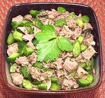

|
Beef & Cucumber SaladFrance - Salade de Boeuf aux Concombres | ||||
| Serves: Effort: Sched: DoAhead: |
4 salad ** 2 hrs Best |
A simple and delightful way to use up cooked beef (but you could also cook beef specifically for this recipe). This dish will be well received by the unrepentant carnivours at any buffet party. | |||
|
2-1/2 2 2 ------ 6 3 1-1/2 1/4 |
c t c --- T T T t |
Cucumbers (1) Salt Beef, cooked -- Dressing Olive Oil, ExtV Wine vinegar Herbs (2) Pepper |
Make - (2 hr - 15 min work)
|